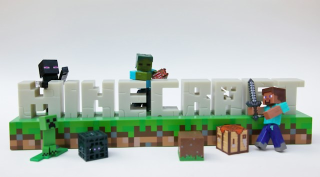

Building My First Minecraft World
October 5, 2026 by Jessica K. Seville

Minecraft is a versatile game that invites players to explore vast
terrains, construct unique structures, and shape their own virtual
worlds. One of the most fulfilling elements of the game is the
process of starting with a basic idea and progressively developing
it into a rich, immersive environment that showcases creativity.
When I set out to build my world, I envisioned a harmonious blend
of stunning natural landscapes—such as rolling hills, dense forests,
and serene lakes—intertwined with intriguing man-made structures
like grand castles, cozy cottages, and bustling villages. This
combination not only adds depth to the environment but also enhances
the sense of adventure as players discover new areas and engage
with the world I've created.
I began by gathering resources and choosing a good location for my
first base. Once I had collected wood, stone, and other materials,
I built a small house. As my world grew, I added farms, pathways,
storage areas, and other structures. The experience showed me that
planning is important when creating a large and organized Minecraft
world.
Exploring and Surviving in Minecraft
October 7, 2026 by Jessica K. Seville
Exploration in Minecraft is a captivating aspect of the game, as
each biome and region offers unique features and surprises waiting
to be uncovered. Players can traverse lush forests filled with
diverse flora and fauna, climb towering mountains that provide
breathtaking views, or delve into dark, mysterious caves that might
hide precious ores and intriguing structures. In addition to natural
landscapes, players can stumble upon charming villages inhabited by
NPCs, where they can trade goods and discover new quests. Each
exploration expedition not only enhances the gaming experience but
also allows players to gather valuable resources, such as rare
materials and food items, which may not be accessible in their
initial starting area. This constant sense of discovery motivates
players to venture further into the vast, blocky world, ensuring
that no two journeys are ever alike.
Survival mode significantly heightens the challenge of exploration,
as players must carefully manage several critical resources,
including their health, food supply, tools, and shelter. In this
mode, players are not just free to roam; they must consider the
consequences of each decision they make. Health is paramount, as
any encounter with hostile elements can lead to injury or even
death. Thus, carrying a reliable stock of food, such as cooked
meats or vegetables, ensures that players can restore their health
when needed. Tools also play a crucial role in survival. Players
should be well-equipped with weapons for defense, axes for gathering
wood, shovels for mining, and pickaxes for stone. Having these tools
readily available allows for efficient resource gathering, which is
vital for building and crafting. Shelter is another critical aspect
of survival. Players should prepare by bringing adequate building
materials, like wood or stone, to construct a safe haven from the
nightly onslaught of hostile mobs, such as zombies or skeletons,
that emerge when darkness falls. Thorough preparation—ensuring a
sufficient food supply, robust tools, and ample building materials—
transforms a potentially perilous journey into a far more manageable
and enjoyable adventure, allowing players to explore the world with
confidence and a greater sense of security.